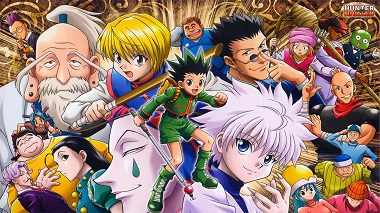
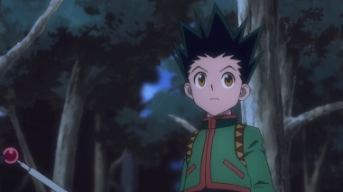
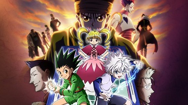
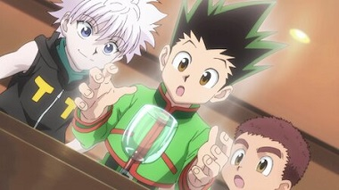
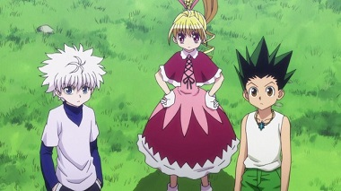
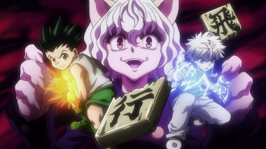

Season 1
Season 1 is the first of 6 seasons of Hunter X Hunter. It is an introductory season allowing the viewer to slowly learn all the charactors names and what there skills are. Is has the two main charactors, Gon and Killoa, along with 2 side charactors, Kurapika and Leorio, adventure through a training course, known as the Hunter Exam, so they can become Hunters! They face many challenges and trials, they have to (Explain all the chalenges). After all of this they are given the title of three of the four of them are given the title of Hunter. Along with a new enemy which they will encounter in the next seasons.
Season 3
Season three is the season where gon and killoa need to make even more money to but a game called Greed Island. They have Gon arm wrestling for money and adventually meet a gang of very strong people. Throught the season they made and find out new ways to get more and more money. Most of the season is filler but it is still pretty good.
Season 5
Season 5 was by far the longest of all of the seasons in Hunter X Hunter. It was 60 episodes long with a large amount of content. The season had Gon, Killoa and a couple more of their friends fight a breed of ants. Theses ants could have there shapes altereted if the queen at different food. Eating food with more power would make an ant that was stronger. Adventually she gave birth to the king who promptly killed her. The King knows his job is to rule the world but Gon and Killoa are there to stop him. After a lot of training preparing and hard work, Gon, Killoa and friends take on the king and his royal guards. The royal guards are quickly defeated as the King fights the strongest of Gon's friends, Netero. The battle is intense and causes the king to be poisened the poisen takes effect later in the season killing the king.
Season 2
Season two was the season where Gon and Killoa trained and learned almost all of there skills. They also compete in a combat tournament to gain money for the upcoming season. During this tournament they remeet with people the meet from the first season and have trouble beating them. The tournament is a tower where each floor has progressivly harder openents. Gon adn Killoa shoot strait to the top where they fight enemies that are a lot stronger than them and win.
Season 4
Season 4 is the season where they enter greed island and play the game in person. Throught the season Gon and Killoa are tested with tough enemies and chalanges to be able to leave. Other people in the game have resorted to hurting other people to get the cards to leave. This troubles Gon and Killoa so they make it there mission to stop these people before they beat the game. Towards the end everyone teams up so Gon and Killoa can get the cards the need to win the game. And so Gon and Killoa beat Greed Island and have lived through another season.
Season 6
This season is a wrap up season after the intetnse season 5. Gon spends most of the time in the hospital while Killoa is trying desperitly to get help to him. A new leader is elected as Netero dies. And Gon finnaly meets his father.
